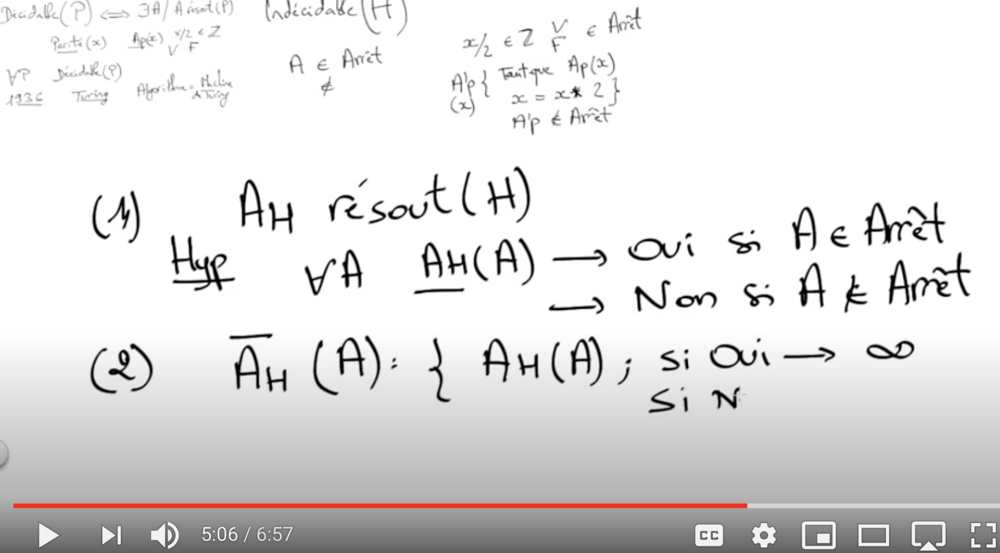

calculer sur un algorithme
Calculabilité
Dans le chapitre précédent, sur la complexité, l’objet d’étude principal etait l’algorithme. On en a fait une mesure de son efficacité: un algorithme est plus efficace s’il est plus rapide (donc de classe de complexité plus faible).
En calculabilité, le problème devient l’objet central.
Voir le cours d’algorithmique de Pierre Antoine Champin, CNRS: definition très claire de la notion de Problème comme une classe.
Le Problème de Décision - Voyages au pays des maths | ARTE
On a souvent l’impression que pour chaque problème on peut trouver un algorithme de solution. Ce n’est pas le cas : pour des nombreux probèmes naturels et intéressants il n’existe pas d’algorithme. Ces problèmes sont non calculables. Cette notion a évolué dans l’histoire de l’informatique au cours des étapes suivantes:
Charles Babbage (1791 – 1871), professeur à Cambridge, construit la machine différentielle et la machine analytique. La dernière peut être considérée comme précurseur des ordinateurs modernes, consistant d’une unité de contrôle, une unité de calcul, une mémoire, ainsi que l’entrée-sortie.
Charles Babbage (1791 – 1871) - wikipedia
Ada Lovelace (1815 – 1852)

Pour cela, on s’appuie sur un systèmes d’axiomes censés fonder les mathématiques. A partir de ce système d’axiomes, on n’aura jamais des démonstrations contradictoires d’une proposition (d’un problème, d’un énoncé de mathématique).
Selon lui, tout est décidable, selon le terme qui sera employé plus tard.
David Hilbert (1862 – 1943)

Il s’agit du théorème d’incomplétude.
Paradoxalement, on sait que certaines de ces propositions indécidables sont vraies, mais on ne peut le démontrer.
Kurt Gödel (1906 – 1978)


Alan Turing (1912 – 1954) - wikipedia
Définitions
Qu’est ce qu’un problème?
Informatiquement, problème sera synonyme de fonction. Un problème est caractérisé par:
- Le nom du problème
- des données d’entrée, que l’on appelle instance du problème.
- une question mathématique posée sur ces données d’entrée.
Rq : Ne pas confondre problème et algorithme le résolvant. Il peut y avoir plusieurs algorithmes qui resolvent le même problème (calculent la même fonction).
Les problèmes s’énoncent de la manière la plus générale possible. On peut les désigner comme des classes, possédant de multiples instances (celles pour lesquelles on place des valeurs à la place des varaibles).
Problème 1
- Donnée : Un ensemble N d’entiers naturels
- Question : Déterminer les nombres pairs dans cet ensemble.
Instance 1: Quels sont les nombres pairs dans l’ensemble [1,2,3,4]?
Problème 2
- Donnée : Un ensemble N d’entiers naturels
- Question : Déterminer les nombres premiers de cet ensemble.
Instance 2: Le nombre 137 est-il premier?
Problème 3
- Donnée : Un programme C.
- Question : Le programme est-il syntaxiquement correct ?
Ce dernier exemple de problème suggère qu’un algorithme est une donnée comme une autre. En effet, le script qui traduit l’algorithme est écrit dans un langage. Et la machine va le lire et l’interpréter à l’aide d’un autre programme. Pour ce programme, le script est une donnée (interpréteurs, compilateurs).
Calculabilité
Qu’est-ce que c’est “calculable”?
- En mathématique : Une fonction f : ℕ → ℕ est calculable s’il existe un programme/algorithme qui calcule f: si la fonction f est définie sur une entrée x, alors l’algorithme doit renvoyer la valeur f(x), et si f n’est pas définie, l’algorithme doit boucler sur l’entrée x.
- En algorithmique: on dira qu’une fonction est calculable si elle peut être programmée dans l’un ou l’autre des langages de programmation usuels.
La première fonction explicite non calculable a été décrite par Turing en 1936. Il s’agit du problème de l’arrêt : étant donné un algorithme A et une entrée x, il s’agit de déterminer si A s’arrête ou non sur l’entrée x (i.e A ne boucle pas sur l’entrée x).
Théorème : Le problème de l’arrêt est incalculable.
Qu’est ce que la “terminaison”? On dit qu’un programme termine s’il ne boucle pas, c’est-à-dire qu’il renvoie bien un résultat.
Problèmes de décision décidables
Problèmes de décision
Il existe une catégorie de problèmes que l’on appelle : problèmes de décision. Dire que le problème est decidable, c’est dire qu’il existe un programme Python permettant de calculer f(n) pour tout entier n, en un temps fini. Ou bien : P est décidable s’il existe un algorithme qui pour chaque x dit “OUI” ou “NON” à la question : “Est-ce que P(x) est vrai ?”. Tous les problèmes mathématiques (voir plus haut) peuvent être énoncés comme des problèmes de décision: voir page wikipedia., avec le Passage de problème d’optimisation à problème de décision.
Pour les problèmes 1 et 2 vus auparavent, on peut les énoncer sous la forme:
- instance du Problème 1
- Donnée : Un nombre entier positif n en base 2.
- Question : n est-il pair?
autre exemple:
- instance du Problème 2
- Donnée : Un nombre entier positif n en base 10.
- Question : n est-il premier?
Les problèmes 1 et 2 sont énoncés comme un problème de décision.
En conséquence, le problème de la décision, c’est-à-dire la recherche d’une procédure qui indique dans chaque contexte, et au bout d’un temps fini, si une propriété est vraie ou fausse, est équivalent à la construction d’un algorithme qui calcule pour chaque fonction f et pour chaque argument x de f, la valeur y telle que y = f(x). Autrement dit, le problème de la décision est équivalent au problème du calcul.
décidables ou indécidables?
Les fonctions, ou propriétés bien énoncées1 en langages mathématique sont-elles toutes décidables? La reponse est : Non, il n’existe pas de telle méthode, comme cela a été démontré en 1931 par Kurt Gödel (voir plus haut).
L’indecidabilité c’est l’impossibilité absolue et définitivement démontrée de résoudre par un procédé général de calcul un problème donné.
Imaginons qu’il existe des programmes qui calculent si un programme termine. Ces programmes prendraient une fonction A comme paramètre, et une donnée x d’entrée de cette fonction.
Si A s’arrête sur l’entrée x, le programme termine peut renvoyer True. Mais si ce n’est pas le cas, le programme ne répondra jamais. À quel moment décide-t-on qu’il n’a pas encore répondu, c’est qu’il ne répondra jamais ? On n’a aucun moyen de le faire, et c’est ce que prouve le théorème de Turing.

Décidabilité et indécidabilité : Problème de l'arrêt | Rachid Guerraoui
Exemple de problème non décidable :
- Problème
- Donnée : Un programme C.
- Question : Le programme s’arrête-t-il toujours ?
Preuve d’un algorithme
terminaison et correction
Prouver le bon fonctionnement d’un algorithme nécessite de vérifier deux propriétés :
- premièrement : la terminaison : prouver que l’algorithme se termine.
- deuxièmement : la correction : si l’algorithme se termine, il fait bien ce qu’on attend de lui (correction partielle).
D’après ce qui a été vu auparavent, il n’EXISTE PAS d’algorithme capable de calculer la terminaison ou la correction d’un programme. Ce sera à vous de PROUVER un algorithme, à partir de méthodes exposées ici.
méthodes pour les algorithmes itératifs
Pour la terminaison : étude du VARIANT de boucle
Il faudra exhiber, pour chaque boucle
while, un VARIANT de boucle.
Pour la correction :
Exhiber un INVARIANT de boucle qui permet de montrer le résultat voulu.
Invariant de boucle : on appelle invariant d’une itération toute propriété, vraie à l’initialisation, et qui demeure conservée quand on passe d’un état quelconque à son successeur.
Algorithme recursif
Dans le cas des algorithmes récursifs, ces méthodes sont spécifiques.
terminaison
Le (ou l’un des) paramètre(s) appelé(s) par la fonction recursive doit avoir une relation d’ordre descendante. C’est à dire que ce paramètre doit être de plus en plus petit à chaque appel de la fonction dans le corps de la fonction récurente.
correction partielle
Il faut montrer que si les appels internes à l’algorithme font ce qu’on attend d’eux, alors l’algorithme entier fait ce qu’on attend de lui. La preuve de correction se fait à partir d’une demonstration par recurrence :
- On commence à établir la preuve pour le rang n = 0, puis n = 1.
- il faut montrer que si on peut prouver la correction pour une suite de rang n-1, on aboutira à la preuve de correction pour une suite de rang n.
Exemples
Exemple 1: fonction somme
Script
La fonction suivante réalise la somme des termes d’une liste.
terminaison
Le script contient une boucle bornée. La variable k augmente d’une unité à chaque itération. De k=0 jusqu’à len(L)-1. La boucle s’arrêtera lorsque k atteindra len(L) -1, ce qui arrivera forcement.
correction
On considère l’invariant de boucle énoncé ainsi : “pour un indice k, s est égal à la somme de L[:k]”. C’est à dire à:
L[0] + L[1] + L[2] + … + L[k-1]
- A l’entrée dans la boucle : s = 0. Ce qui est attendu puisque l’on n’a pas encore additionné le premier terme L[0].
- Pour une valeur k. On suppose que s est egal à la somme des termes de L[:k-1]. Alors, à la ligne 4, on ajoute L[k] à s. Donc s est bien égal à la somme de L[:k].
- A la fin de la boucle, k vaut len(L)-1, et c’est justement l’indice du dernier élément de la liste. s sort alors avec pour valeur la somme de TOUS les termes de la liste L. CQFD
Exemple 2: Recherche dichotomique
Definition
La recherche dichotomique consiste à diviser par 2 l’ensemble de recherche. Pour cela, on définit le milieu de l’intervalle de recherche, puis on conserve:
Exemple: On recherche un mot commençant par la lettre c dans le dictionnaire. Les lettres du dictionnaire sont dans l’ensemble [a .. z]. Il s’agit d’une liste [‘a’,‘b’,‘c’,’d’, ..’m’, ..,‘x’,‘y’,‘z’]. Comme il s’agit d’une liste dont les indices vont de 0 à 25: Le milieu, c’est 25//2 soit 12. la lettre c a un rang inférieur à 12 (lettre m). Donc, dans une première étape de recherche, on prendra la liste entre les rangs 0 et 12 pour rechercher c.
Terminaison de la fonction de recherche dichotomique
Dans le pire des cas, l’intervalle va se réduire jusqu’à se limiter à un seul élément. Celui dont l’index est mid. Avec i_min == i_max
Si l’élément recherché est dans la liste: Cet élément est alors la valeur recherchée x, et la fonction se termine en retournant la valeur de l’index de x dans la liste, mid.
Si l’élément recherché n’est pas dans la liste: alors, soit i_min prend la valeur de mid+1, soit i_max prend la valeur de mid-1. On a alors i_min > i_max, qui est la condition d’arrêt de la boucle.
Efficacité de la recherche dichotomique
Le nombre d’opérations de comparaison, dans le pire des cas, est proportionnel à log(N). N étant égal à la taille de la liste. Et log(N) étant egal au nombre de divisions par 2 qu’il faut effectuer pour que N arrive à 1:
On dit que la complexité est logarithmique.
Preuve de correction
voir le document sur eduscol.education.fr, pages 4 et 5: [eduscol.education.fr/document/30064/download]((https://eduscol.education.fr/document/30064/download)
Résumé
- Un Problème: Ensemble Nom + Données d’entrée + Question
- Pour la suite: Problème = Fonction
- L’ensemble des algorithmes, donc des fonctions calculables, est dénombrable. Un algorithme est une approche étape par étape pour résoudre un problème.
- L’ensemble des fonctions est indénombrable, donc il existe des fonctions incalculables.
- Calculable: il existe une fonction f programmable dans un langage courant (python)
- Calculable = Décidable: un problème calculable peut être traduit en un problème équivalent décidable. La différence est que, pour un problème calculable, on doit calculer une image f(x), alors que pour un problème décidable, la fonction retourne une valeur booléenne (True,False). Le problème est exprimé différemment.
- Indécidable (ou incalculable): c’est l’impossibilité définitivement démontré de résoudre par un algorithme un problème donné.
- Le problème de l’arrêt est un exemple de fonction incalculable.
- L’étude de la terminaison d’une fonction est liée à l’étude de sa complexité. Il faut pouvoir évaluer si un problème décidable, l’est en un temps raisonnable.
- Il n’existe pas de programme permettant de savoir si une fonction termine, et si elle fait bien ce qui est attendu d’elle. C’est pour cela qu’il faudra savoir prouver une fonction. Pour cela, il faudra:
- démontrer que la fonction termine. On s’aide souvent d’un VARIANT de boucle.
- démontrer la correction de cette fonction, c’est à dire qu’elle fait bien ce que l’on attend d’elle. On s’aide souvent d’un INVARIANT de boucle.
Liens : généralités
- Interstice : décidabilité calculabilité
Liens pour approfondir
- Université de Nice : introduction au cours décidabilité et complexité
- cours en pdf université de Grenoble : calculabilité
- cours sur l’algorithmique Bruno Grenet
- cas des algorithmes recursifs : https://fr.wikipedia.org/wiki/Algorithme_récursif
- théorie des modèles, axiomes, théorèmes: théorie des modèles: Techno-sciences et Axiome logique - Définition et Explications: Techno-sciences et Déductions naturelles: Techno-sciences et Déductions naturelles: Wikipedia
- Cours algorithmique de Pierre Antoine Champin, CNRS: definition très claire de la notion de Problème.
Notes
-
ceci fait reference au theoreme de completude énoncé par Gödel. Une théorie mathématique pour laquelle tout énoncé est décidable est dite complète, sinon elle est dite incomplète. D’où le Premier Théorème d’incomplétude de Gödel “Dans n’importe quelle théorie récursivement axiomatisable, cohérente et capable de « formaliser l’arithmétique », on peut construire un énoncé arithmétique qui ne peut être ni prouvé ni réfuté dans cette théorie. Il n’existe donc aucune théorie mathématique complète.” (Premier Théorème d’incomplétude de Gödel) ↩︎